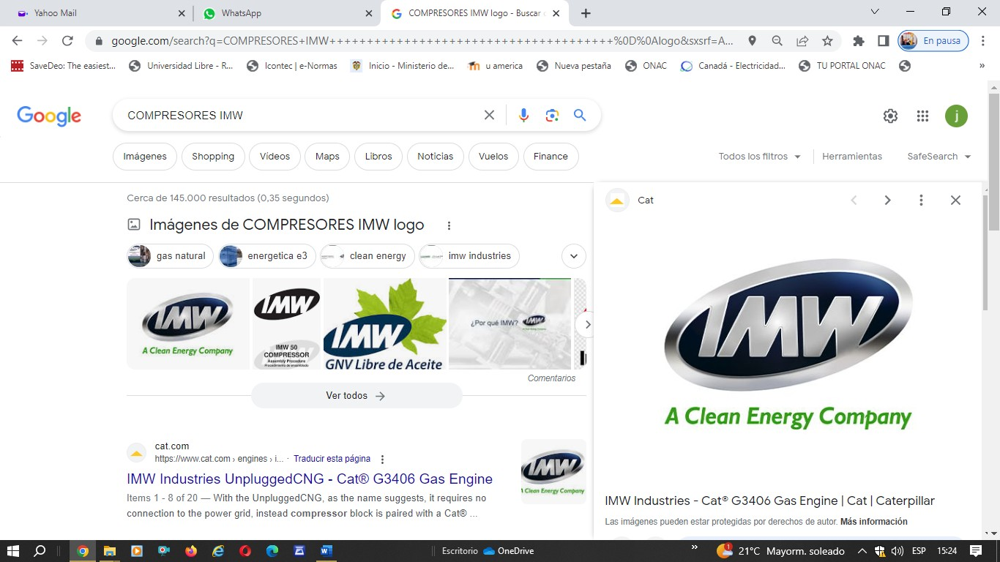

Diagnóstico avanzado para equipos rotatorios críticos del sector industrial.
Solicitar Diagnóstico





El análisis de vibraciones permite determinar mediante mediciones periódicas el estado del desgaste de los elementos rodantes, previniendo paros no programados y evitando pérdidas económicas por fallas en sistemas industriales.
El balanceo dinámico es una práctica técnica normalizada orientada a reducir la carga en cojinetes y disminuir el ruido de funcionamiento de equipos rotatorios, mejorando su confiabilidad y prolongando su vida útil.
Bogotá, Colombia
WhatsApp: +57 310 868 4070